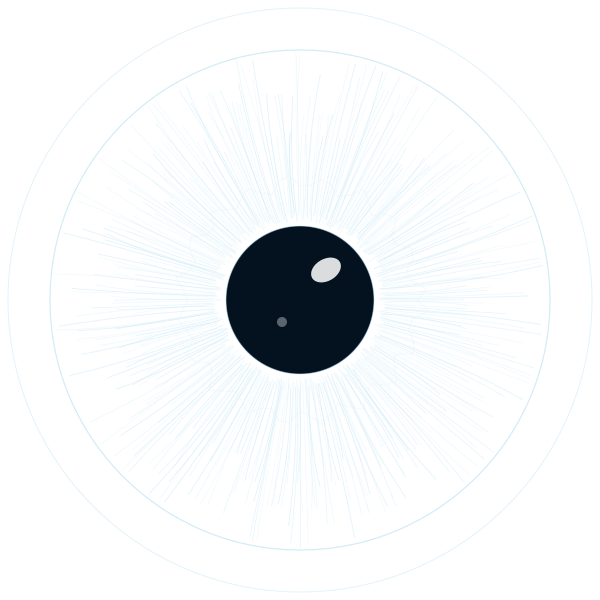

Cataract surgery
Stitchless micro-incision phacoemulsification as day-care surgery, with monofocal, toric and multifocal lens choices.
About cataract surgery
Vijayanagar, Bengaluru. Caring for eyes since 1985.
Cataract, LASIK, retina, glaucoma and children's eye care, with advanced diagnostics and modular operation theatres under one roof.
Every patient is examined by a senior specialist after a complete work-up of vision and eye pressure.
Stitchless micro-incision phacoemulsification as day-care surgery, with monofocal, toric and multifocal lens choices.
About cataract surgeryLaser vision correction planned from corneal topography and thickness, for adults who want to be free of glasses.
About LASIKDiabetic retinopathy, macular degeneration and retinal detachment, with OCT, angiography and retinal laser.
About retina careEarly detection with pressure, optic nerve and visual field tests, and careful lifelong management.
About glaucomaRefractive errors, lazy eye (amblyopia), squint and digital eye strain, assessed in a child-friendly way.
About children's eye careComplete eye examinations, dry eye care, pterygium and corneal infections, and in-house spectacles.
About eye examinationsAccurate diagnosis comes first. Our imaging and testing equipment lets the doctor stage a condition precisely and plan surgery with confidence.
Operation theatres are run to NABH guidelines, with HEPA filtration and autoclave sterilisation.
Founder and Chief Ophthalmologist
MBBS, DO, MS (Ophthalmology), FVR
Comprehensive ophthalmology, cataract and glaucoma.
40+ years in practiceSenior Vitreo-Retinal Surgeon
MBBS, DO, MS (Ophthalmology), FVR
Vitreo-retinal surgery, diabetic retinopathy and macular disorders.
25+ years in practiceConsultant Ophthalmologist and Phaco Surgeon
MBBS, DOMS, DNB
Phacoemulsification cataract surgery and refractive care.
15+ years in practiceConsultant Ophthalmologist
MS (Ophthalmology), FVR
Anterior segment, medical retina and diagnostics.
20+ years in practiceConsultant Ophthalmologist
MBBS, MS (Ophthalmology)
Cornea care and eye examinations for children.
10+ years in practiceConsultant Cataract, Cornea and Refractive Surgeon
MS (Ophthalmology), FPRS
Phacoemulsification, cornea and LASIK.
8+ years in practicePersonal attention from senior consultants, explained clearly, without hurried referrals.
Call or WhatsApp to confirm the doctor's timings, or tell reception you are on your way. Walk-ins are welcome.
Register at the front desk; an optometrist checks your vision, glasses power and eye pressure.
A senior specialist examines your eyes with the slit lamp, and dilates the pupils when needed.
The doctor explains the diagnosis and treatment, your spectacle prescription, or surgery and cashless Mediclaim.
Our Mediclaim desk prepares the documents and the pre-authorisation with your insurer or TPA, so that you can focus on your treatment. Bring:
Coverage depends on your policy. Cash, UPI and cards are also accepted.
Monday to Saturday, 9:00 am to 9:30 pm. Walk-ins are welcome; booking ahead shortens your wait.